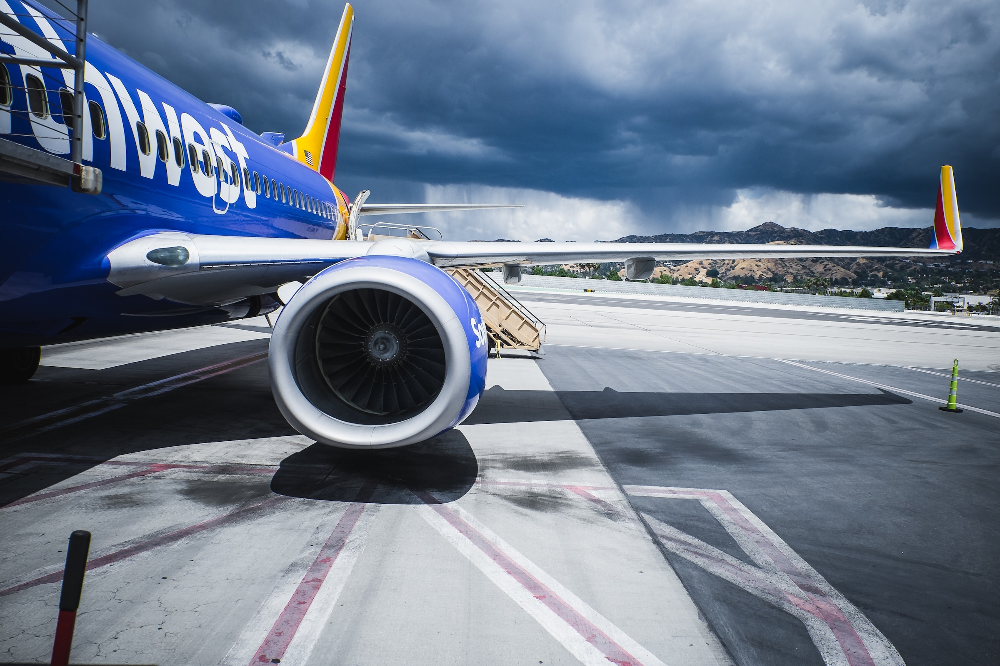

Airline passenger satisfaction analysis.
In this analysis project, i will be analyzing the customer satisfaction scores of 120,000+ passengers, including additional information about each passenger, their flight and type of travel, as well as the evaluation of different factors such cleanliness, seat comfort, in-flight service, baggage handling and the overall experience. Key insights will be drawn to aid the improvement of the airline's services and in turn the overall business performance. This analysis will answer the following questions;
1. What percentage of the airline's passengers are satisfied with its overall services? Does it vary by customer type? What about travel type?
2. Does flight distance affect customer preference and satisfaction?
3. Whic factors contribute to customer satisfaction the most? What about dissatisfaction?
4. What is the customer profile for a returning airline passenger?
This project was executed using Microsoft SQL Server and Tableau for the accompanying visualizations.